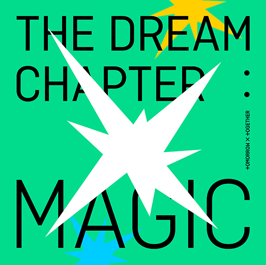

DISCOGRAFÍA
The Dream Chapter: Star
Este incluye cinco canciones: “Blue Orangeade”, “CROWN”, “Our Summer”, “Cat & Dog” y "Nap of a star". “CROWN” es un tema pop trendy con sintetizador escrito por Slow Rabbit, Melanie Fontana, Michel “Lindgren” Schulz y Supreme Boi. La letra expresa el dolor de la adolescencia.

The Dream Chapter: Magic
TXT compartíó la lista de canciones para su primer álbum completo "The Dream Chapter: MAGIC". El álbum incluirá ocho canciones en total, incluyendo "New Rules”, “Run Away”, “Roller Coaster” escrita por Huening Kai, “Poppin’ Star”, “Can’t We Just Leave the Monster Alive?”, “Magic Island”, “20cm” y “Angel or Devil.”.El cual cuenta con dos versiones Arcadia y Sanctuary."Run Away" es una canción pop sintetizada sobre huir a un lugar mágico donde sólo tú y tus amigos pueden ir. En el video musical, los miembros de TXT muestran su energía juvenil en varios entornos, incluyendo una escuela, una piscina, el bosque y más.
The Dream Chapter: Eternity
Lista de canciones del nuevo mini álbum siendo el primer tema principal "Can’t You See Me?", "Drama", "Fairy of Shampoo" escrita por Yeonjun y los productores Slow Rabbit y ELCAPITXN, "Maze in the Mirror" escrita por todos los miembros y producida por Beomgyu, "PUMA" y "Eternally".De igual manera con dos versiones: Port y Starboard.

Minisode 1: Blue Hour
Lista de canciones del nuevo mini álbum siendo el primer tema principal "Blue Hour", "Way Home", "We lost the summer" y "Wishlist" escritas por Yeonjun, Taehyun y Hueningkai, "Ghosting" escrita por Soobn, Taehyun y Hueningkai. Este albúm cuenta con 3 versiones distintas hablando sobre AR, R y VR. Este albúm fue importante para ellos ya que se cumplio un año desde la última vez que se pudieron encontrar con MOA (su fandom) y empatizan con la situación de la cuarentena.